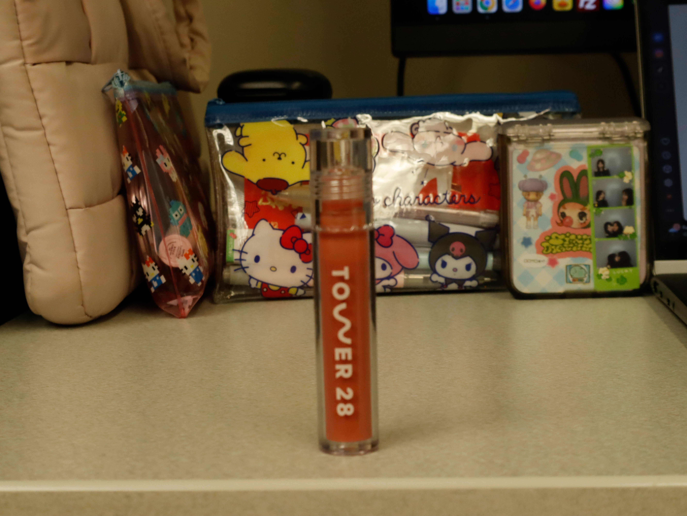
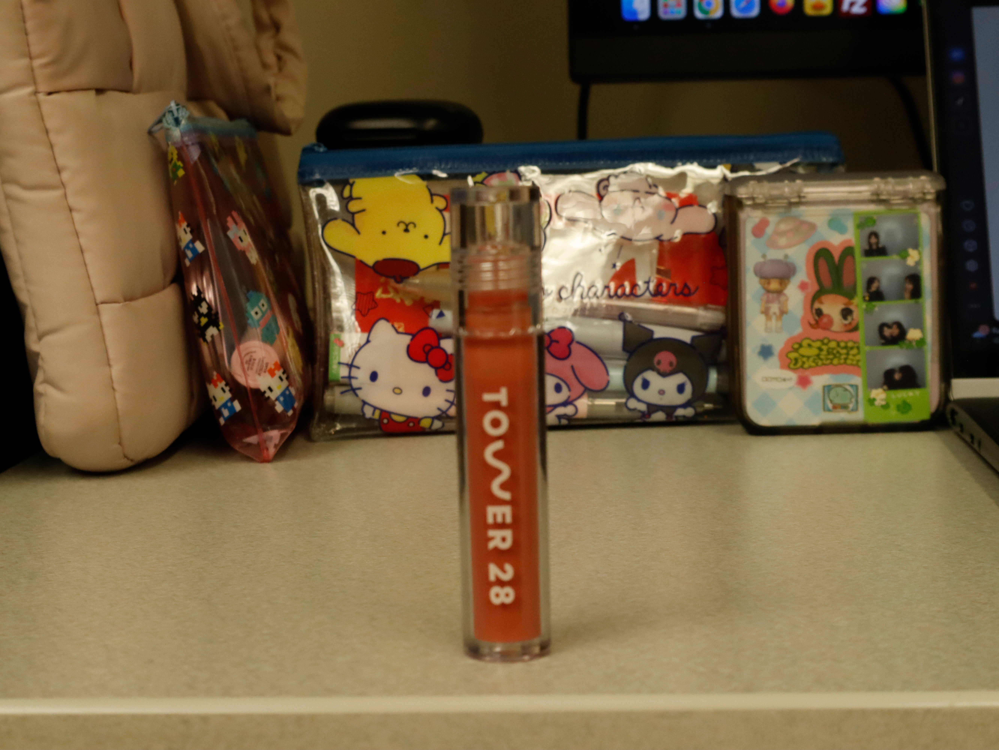
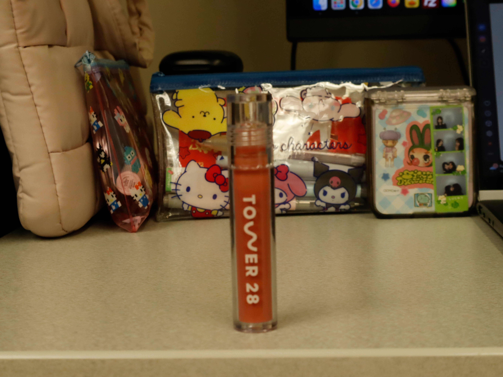

In order from left to right, the first image is an example of using artificial zoom to create a close-up of the subject.
The second image is an example of using a shallow depth of field to create a blurry background and make the subject more focused.
f/5.6, ISO 400
The third image is an example of using a deep depth of field to have everything in focus, including the background.
f/10, ISO 1600
The fourth image is meant for comparisons, it is the original raw photo that I took at the computer lab.